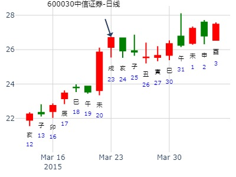
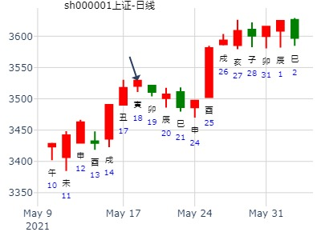
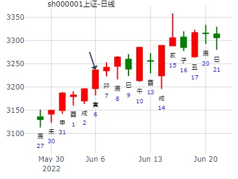
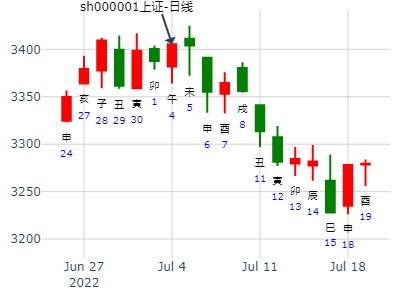

电脑摇卦(起卦方式)
占问事宜：000523广州浪奇
公历：2011年1月18日19时38分，星期二。
干支：庚寅年 己丑月 癸酉日 壬戌时 (卦身：寅)
主 泽山咸(兑宫) [空亡:戌、亥]
白虎 ▅▅ ▅▅ 父母丁未土 应
螣蛇 ▅▅▅▅▅ 兄弟丁酉金
勾陈 ▅▅▅▅▅ 子孙丁亥水
朱雀 ▅▅▅▅▅ 兄弟丙申金 世
青龙 妻财丁卯木 ▅▅ ▅▅ 官鬼丙午火
玄武 ▅▅ ▅▅ 父母丙辰土
明天14日涨跌手摇卦
公历时间：2020年1月13日21时18分
干 支：己亥年 丁丑月 乙卯日 丁亥时
旬 空：辰巳 申酉 子丑 午未
神 煞：驿马─巳 桃花─子 日禄─卯 贵人─子，申
兑宫：泽山咸
六神 伏 神 【本 卦】
玄武 ▄▄ ▄▄ 父母丁未土 应
白虎 ▄▄▄▄▄ 兄弟丁酉金
螣蛇 ▄▄▄▄▄ 子孙丁亥水
勾陈 ▄▄▄▄▄ 兄弟丙申金 世
朱雀 妻财丁卯木 ▄▄ ▄▄ 官鬼丙午火
青龙 ▄▄ ▄▄ 父母丙辰土
咸静卦_002098
占事: 002098未来二周
时间: 2022-01-09
干支: 辛丑年辛丑月壬戌日乙巳时 (旬空: 子丑 )
咸静卦
六神 伏神 本 卦
白虎 ▅▅ ▅▅ 父母未土 应
腾蛇 ▅▅▅▅▅ 兄弟酉金
勾陈 ▅▅▅▅▅ 子孙亥水
朱雀 ▅▅▅▅▅ 兄弟申金 世
青龙 妻财卯木▅▅ ▅▅ 官鬼午火
玄武 ▅▅ ▅▅ 父母辰土
卯日跌，财值班，可惜兄弟暗动。
试测中国宝安2.23壬寅二-2.26乙巳哪日顶？
公历起卦时间：2021年2月23日10时24分 (电脑自动)
干支：辛丑年 庚寅月 壬寅日 乙巳时 （日空：辰巳）
神煞：驿马－申 桃花－卯 日禄－亥 贵人－卯，巳
兑宫：泽山咸
六神 伏神 本 卦
白虎 父母丁未土 ▅▅ ▅▅ 应
螣蛇 兄弟丁酉金 ▅▅▅▅▅
勾陈 子孙丁亥水 ▅▅▅▅▅
朱雀 兄弟丙申金 ▅▅▅▅▅ 世
青龙 妻财丁卯木 官鬼丙午火 ▅▅ ▅▅
玄武 父母丙辰土 ▅▅ ▅▅
试测2023.3.8上证收盘个位数是几？
公历起卦时间：2023年2月15日11时56分 (电脑自动)
干支：癸卯年 甲寅月 甲辰日 庚午时 （日空：寅卯）
神煞：驿马－寅 桃花－酉 日禄－寅 贵人－丑，未
兑宫：泽山咸
六神 伏神 本 卦
玄武 父母丁未土 ▅▅ ▅▅ 应
白虎 兄弟丁酉金 ▅▅▅▅▅
螣蛇 子孙丁亥水 ▅▅▅▅▅
勾陈 兄弟丙申金 ▅▅▅▅▅ 世
朱雀 妻财丁卯木 官鬼丙午火 ▅▅ ▅▅
青龙 父母丙辰土 ▅▅ ▅▅
占事：2008.03.10-14日000727走势？
起法：手动摇卦
公历：2008年3月7日12时13分 星期五
干支：戊子年 乙卯月 丙午日 甲午时 (旬空：寅卯)
兑宫：泽山咸
六神 伏 神 【本 卦】
青龙 ▅▅ ▅▅ 父母丁未土 应
玄武 ▅▅▅▅▅ 兄弟丁酉金
白虎 ▅▅▅▅▅ 子孙丁亥水
螣蛇 ▅▅▅▅▅ 兄弟丙申金 世
勾陈 妻财丁卯木 ▅▅ ▅▅ 官鬼丙午火
朱雀 ▅▅ ▅▅ 父母丙辰土
占事: 600030下周走势3月23日~27日
起卦方式：手动摇卦
公历时间：2015年3月22日16时7分
干支：乙未年 己卯月 丁酉日 戊申时
旬空：辰巳 申酉 辰巳 寅卯
神煞：驿马─亥 桃花─午 日禄─午 贵人─酉，亥
兑宫：泽山咸
六神 伏 神 【本 卦】
青龙 ▄▄ ▄▄ 父母丁未土 应
玄武 ▄▄▄▄▄ 兄弟丁酉金
白虎 ▄▄▄▄▄ 子孙丁亥水
螣蛇 ▄▄▄▄▄ 兄弟丙申金 世
勾陈 妻财丁卯木 ▄▄ ▄▄ 官鬼丙午火
朱雀 ▄▄ ▄▄ 父母丙辰土

占事：002027七喜控股下周涨跌
公历起卦时间：2016年3月5日17时9分 (电脑自动)
干支：丙申年 辛卯月 丙戌日 丁酉时 （日空：午未）
神煞：驿马－申 桃花－卯 日禄－巳 贵人－酉，亥
兑宫：泽山咸
六神 伏神 本 卦
青龙 父母丁未土 ▅▅ ▅▅ 应
玄武 兄弟丁酉金 ▅▅▅▅▅
白虎 子孙丁亥水 ▅▅▅▅▅
腾蛇 兄弟丙申金 ▅▅▅▅▅ 世
勾陈 妻财丁卯木 官鬼丙午火 ▅▅ ▅▅
朱雀 父母丙辰土 ▅▅ ▅▅
中科曙光(603019) 近期走势
泽山咸静卦。
公历起卦时间：2017年3月14日10时51分 (在线摇卦)
干支：丁酉年 癸卯月 庚子日 辛巳时 （日空：辰巳）
兑宫：泽山咸
六神 伏神 本 卦
腾蛇 父母丁未土 ▅▅ ▅▅ 应
勾陈 兄弟丁酉金 ▅▅▅▅▅
朱雀 子孙丁亥水 ▅▅▅▅▅
青龙 兄弟丙申金 ▅▅▅▅▅ 世
玄武 妻财丁卯木 官鬼丙午火 ▅▅ ▅▅
白虎 父母丙辰土 ▅▅ ▅▅
二周内兄弟持世不涨。
咸静卦,3.20-3.24日上证走势
时间: 2023-3-18
干支: 癸卯年乙卯月乙亥日 (旬空: 申酉 )
咸静卦
玄武 ▅▅ ▅▅ 父母未土 应
白虎 ▅▅▅▅▅ 兄弟酉金
腾蛇 ▅▅▅▅▅ 子孙亥水
勾陈 ▅▅▅▅▅ 兄弟申金 世
朱雀 ▅▅ ▅▅ 官鬼午火
青龙 ▅▅ ▅▅ 父母辰土
占事：2014年5月大盘走势
起卦方式：手动摇卦
公历时间：2014年5月5日20时33分
干 支：甲午年 戊辰月 丙子日 戊戌时
旬 空：辰巳 戌亥 (申酉) 辰巳
兑宫：泽山咸
六神 伏 神 【本 卦】
青龙 ▄▄ ▄▄ 父母丁未土 应
玄武 ▄▄▄▄▄ 兄弟丁酉金
白虎 ▄▄▄▄▄ 子孙丁亥水
螣蛇 ▄▄▄▄▄ 兄弟丙申金 世
勾陈 妻财丁卯木 ▄▄ ▄▄ 官鬼丙午火
朱雀 ▄▄ ▄▄ 父母丙辰土
风生水起 占事：002263下周 ??起卦方式：手动摇卦
公历时间：2015年5月23日10时15分 ??
干 支：乙未年?辛巳月?己亥日?己巳时 （辰巳空）
兑宫：泽山咸
六神? 伏 神 【本 卦】
勾陈 ▄▄ ▄▄ 父母丁未土 应
朱雀 ▄▄▄▄▄ 兄弟丁酉金
青龙 ▄▄▄▄▄ 子孙丁亥水
玄武 ▄▄▄▄▄ 兄弟丙申金 世
白虎 妻财丁卯木 ▄▄ ▄▄ 官鬼丙午火
螣蛇 ▄▄ ▄▄ 父母丙辰土

下半年上证指数是否会涨？
公历起卦时间：2017年5月27日13时0分 (在线摇卦)
干支：丁酉年 乙巳月 甲寅日 辛未时 （日空：子丑）
神煞：驿马－申 桃花－卯 日禄－寅 贵人－丑，未
兑宫：泽山咸
六神 伏神 本 卦
玄武 父母丁未土 ▅▅ ▅▅ 应
白虎 兄弟丁酉金 ▅▅▅▅▅
腾蛇 子孙丁亥水 ▅▅▅▅▅
勾陈 兄弟丙申金 ▅▅▅▅▅ 世
朱雀 妻财丁卯木 官鬼丙午火 ▅▅ ▅▅
青龙 父母丙辰土 ▅▅ ▅▅

航天长峰5月会下探15.00？
男 占事：没填
公历起卦时间：2020年5月20日14时55分 (电脑自动)
干支：庚子年 辛巳月 癸亥日 己未时 （日空：子丑）
神煞：驿马－巳 桃花－子 日禄－子 贵人－卯，巳
兑宫：泽山咸
六神 伏神 本 卦
白虎 父母丁未土 ▅▅ ▅▅ 应
螣蛇 兄弟丁酉金 ▅▅▅▅▅
勾陈 子孙丁亥水 ▅▅▅▅▅
朱雀 兄弟丙申金 ▅▅▅▅▅ 世
青龙 妻财丁卯木 官鬼丙午火 ▅▅ ▅▅
玄武 父母丙辰土 ▅▅ ▅▅

占事：上证519是涨还是跌？
时间: 2021-05-18
干支: 辛丑年癸巳月丙寅日 (旬空: 戌亥 )
咸静卦
六神 伏神 本 卦
青龙 ▅▅ ▅▅ 父母未土 应
玄武 ▅▅▅▅▅ 兄弟酉金
白虎 ▅▅▅▅▅ 子孙亥水
腾蛇 ▅▅▅▅▅ 兄弟申金 世
勾陈 妻财卯木▅▅ ▅▅ 官鬼午火
朱雀 ▅▅ ▅▅ 父母辰土

占事：6月6日沪市涨跌？
公历：2016年6月4日16时2分，星期六。
干支：丙申年 癸巳月 丁巳日 戊申时 (卦身：寅)
主 泽山咸(兑宫) [空亡:子、丑]
青龙 ▅▅ ▅▅ 父母丁未土 应
玄武 ▅▅▅▅▅ 兄弟丁酉金
白虎 ▅▅▅▅▅ 子孙丁亥水
螣蛇 ▅▅▅▅▅ 兄弟丙申金 世
勾陈 妻财丁卯木 ▅▅ ▅▅ 官鬼丙午火
朱雀 ▅▅ ▅▅ 父母丙辰土
测上证综指在2016年6月走势
男
公历起卦时间：2016年6月11日9时56分 (手工指定)
干支：丙申年 甲午月 甲子日 己巳时 （日空：戌亥）
神煞：驿马－寅 桃花－酉 日禄－寅 贵人－丑，未
兑宫：泽山咸
六神 伏神 本 卦
玄武 父母丁未土 ▅▅ ▅▅ 应
白虎 兄弟丁酉金 ▅▅▅▅▅
腾蛇 子孙丁亥水 ▅▅▅▅▅
勾陈 兄弟丙申金 ▅▅▅▅▅ 世
朱雀 妻财丁卯木 官鬼丙午火 ▅▅ ▅▅
青龙 父母丙辰土 ▅▅ ▅▅
占事：本周上证指数走势
起卦方式：手动摇卦
公历时间：2022年6月6日7时7分
干 支：壬寅年 丙午月 庚寅日 庚辰时
旬 空：辰巳 寅卯 午未 申酉
神 煞：驿马─申 桃花─卯 日禄─申 贵人─丑，未
兑宫：泽山咸
六神 伏 神 【本 卦】
螣蛇 ▄▄ ▄▄ 父母丁未土 应
勾陈 ▄▄▄▄▄ 兄弟丁酉金
朱雀 ▄▄▄▄▄ 子孙丁亥水
青龙 ▄▄▄▄▄ 兄弟丙申金 世
玄武 妻财丁卯木 ▄▄ ▄▄ 官鬼丙午火
白虎 ▄▄ ▄▄ 父母丙辰土
周一庚寅，本日开盘后先上涨，上午10:30分钟后回调，尾盘上涨收阳；
周二辛卯，上午继续走高，下午回落，尾盘收阳；
周三壬辰，全天走低，尾盘收阴；
周四癸巳，全天窄幅震荡，尾盘收阳；
周五甲午，尾盘收阴
本周走出带上影线的短阳线

试测2022.7.1中国A股收盘加权涨幅最大的行业版块？
男 占事：没填
公历起卦时间：2022年6月30日16时42分 (电脑自动)
干支：壬寅年 丙午月 甲寅日 壬申时 （日空：子丑）
神煞：驿马－申 桃花－卯 日禄－寅 贵人－丑，未
兑宫：泽山咸
六神 伏神 本 卦
玄武 父母丁未土 ▅▅ ▅▅ 应
白虎 兄弟丁酉金 ▅▅▅▅▅
螣蛇 子孙丁亥水 ▅▅▅▅▅
勾陈 兄弟丙申金 ▅▅▅▅▅ 世
朱雀 妻财丁卯木 官鬼丙午火 ▅▅ ▅▅
青龙 父母丙辰土 ▅▅ ▅▅
7月沪市大盘预测
石英
起卦预测时间：农历二零零七年五月一十八日
(公元2007年7月2日)9时30分预测
干支：丁亥年丙午月丁酉日乙巳时（辰巳空亡 · 手工指定）
［伏神］ 泽山咸（兑宫）
［六兽］ 父母丁未土 ▅ ▅ 父母丁未土 应
青龙 兄弟丁酉金 ▅▅▅ 兄弟丁酉金
玄武 子孙丁亥水 ▅▅▅ 子孙丁亥水
白虎 父母丁丑土 ▅▅▅ 兄弟丙申金 世
螣蛇 妻财丁卯木 ▅ ▅ 官鬼丙午火
勾陈 官鬼丁巳火 ▅ ▅ 父母丙辰土
朱雀财星动破，未月更要入墓，最底下到2700---2800点。
601006短线？
2009-07-07
[post]干支：己丑年 庚午月 癸丑日 丙辰时 （日空：寅卯）
神煞：驿马－亥 桃花－午 日禄－子 贵人－卯，巳
兑宫：泽山咸
六神 伏神 本 卦
白虎 父母丁未土 ▅▅ ▅▅ 应
腾蛇 兄弟丁酉金 ▅▅▅▅▅
勾陈 子孙丁亥水 ▅▅▅▅▅
朱雀 兄弟丙申金 ▅▅▅▅▅ 世
青龙 妻财丁卯木 官鬼丙午火 ▅▅ ▅▅
玄武 父母丙辰土 ▅▅ ▅▅
--------------------------------------------------------------------------------
601006午时卖.下午买回
601600可持般.
本卦看兄爻得日生.当日会跌.因此相对高点卖出.明日才出空.冲世.因此尾盘买回.明日会涨.
明日逢底买入.大盘会再上新高.
占事：近二周大盘
221-112 远致当归
公历起卦时间：2015年7月22日11时22分 (硬币卦)
干支：乙未年 癸未月 己亥日 庚午时 （日空：辰巳）
神煞：驿马－巳 桃花－子 日禄－午 贵人－子，申
兑宫：泽山咸
六神 伏神 本 卦
勾陈 父母丁未土 ▅▅ ▅▅ 应
朱雀 兄弟丁酉金 ▅▅▅▅▅
青龙 子孙丁亥水 ▅▅▅▅▅
玄武 兄弟丙申金 ▅▅▅▅▅ 世
白虎 妻财丁卯木 官鬼丙午火 ▅▅ ▅▅
腾蛇 父母丙辰土 ▅▅ ▅▅
辰日大盘跌停。辰合酉兄合起，墓子孙亥水之故
占事:下周大盘
时间: 2016-07-01
干支: 丙申年甲午月甲申日甲戌时 (旬空: 午未 )
咸静卦
六神 伏神 本 卦
玄武 ▅▅ ▅▅ 父母未土 应
白虎 ▅▅▅▅▅ 兄弟酉金
腾蛇 ▅▅▅▅▅ 子孙亥水
勾陈 ▅▅▅▅▅ 兄弟申金 世
朱雀 妻财卯木▅▅ ▅▅ 官鬼午火
青龙 ▅▅ ▅▅ 父母辰土
占事: 六预测上证指数2022年7月4日至8日走势
时间: 2022-07-03
干支: 壬寅年丙午月丁巳日丁未时(旬空: 子丑 )
咸静卦
六神 伏神 本 卦
青龙 ▅▅ ▅▅ 父母未土 应
玄武 ▅▅▅▅▅ 兄弟酉金
白虎 ▅▅▅▅▅ 子孙亥水
腾蛇 ▅▅▅▅▅ 兄弟申金 世
勾陈 妻财卯木▅▅ ▅▅ 官鬼午火
朱雀 ▅▅ ▅▅ 父母辰土
QQ大道，704周卦。泽山咸静卦。

占事: 002273水晶光电到春节前金玉堂
时间: 2022-08-21
干支: 壬寅年戊申月丙午日己亥时 (旬空: 寅卯 )
咸静卦
六神 伏神 本 卦
青龙 ▅▅ ▅▅ 父母未土 应
玄武 ▅▅▅▅▅ 兄弟酉金
白虎 ▅▅▅▅▅ 子孙亥水
腾蛇 ▅▅▅▅▅ 兄弟申金 世
勾陈 妻财卯木▅▅ ▅▅ 官鬼午火
朱雀 ▅▅ ▅▅ 父母辰土
水晶光电821到春节。泽山咸静卦。金玉堂
上证指数的走势
公历时间：2005年9月13日14时35分 星期二
农历时间：乙酉年八月初十未时
干支：乙酉年 乙酉月 庚子日 癸未时 (旬空：辰巳)
神煞：驿马—寅 桃花—酉 日禄—申 贵人—寅，午
兑宫：泽山咸 六神 伏 神 【本 卦】 螣蛇 ▅▅ ▅▅ 父母丁未土 应
勾陈 ▅▅▅▅▅ 兄弟丁酉金
朱雀 ▅▅▅▅▅ 子孙丁亥水
青龙 ▅▅▅▅▅ 兄弟丙申金 世
玄武 妻财丁卯木 ▅▅ ▅▅ 官鬼丙午火
白虎 ▅▅ ▅▅ 父母丙辰土
占事：酉月上证涨跌如何？
公历时间：2015年9月11日9时0分
干 支：乙未年 乙酉月 庚寅日 辛巳时
旬 空：辰巳 午未 (午未) 申酉
兑宫：泽山咸
六神 伏 神 【本 卦】
螣蛇 ▄▄ ▄▄ 父母丁未土 应
勾陈 ▄▄▄▄▄ 兄弟丁酉金
朱雀 ▄▄▄▄▄ 子孙丁亥水
青龙 ▄▄▄▄▄ 兄弟丙申金 世
玄武 妻财丁卯木 ▄▄ ▄▄ 官鬼丙午火
白虎 ▄▄ ▄▄ 父母丙辰土

今早手摇占600678,得
辛丑 丁酉 癸酉 丁巳 (戌亥空)
辛丑年八月十五(2021/09/22 09:00:29)
泽山咸
白虎 父母未土 ∥ 应
腾蛇 兄弟酉金 ／
勾陈 子孙丁亥 ／
朱雀 兄弟申金 ／ 世
妻财卯木：青龙 官鬼午火 ∥
玄武 父母辰土 ∥
之后看m40分钟图表,得反K象
辛丑 丁酉 癸酉 丁巳 (戌亥空) 辛丑年八月十五(2021/09/22 09:00:29)
泽山咸 水山蹇
白虎 父母未土 ∥ 应 子孙子水 ∥
腾蛇 兄弟酉金 ／ 父母戌土 ／
勾陈 子孙丁亥 ○ 兄弟戊申 ∥ 世
朱雀 兄弟申金 ／ 世 兄弟申金 ／
妻财卯木：青龙 官鬼午火 ∥ 官鬼午火 ∥
玄武 父母辰土 ∥ 父母辰土 ∥ 应
泽山咸静卦。九华山人
占事： 11月17日-11月21日盘走势如何?
起卦方式：手动摇卦
公历时间：2008年11月14日19时39分
干支：戊子年 癸亥月 戊午日 壬戌时
旬空：午未 子丑 子丑 子丑
神煞：驿马─申 桃花─卯 日禄─巳 贵人─丑，未
兑宫：泽山咸
六神 伏 神 【本 卦】
朱雀 ▄▄ ▄▄ 父母丁未土 应
青龙 ▄▄▄▄▄ 兄弟丁酉金
玄武 ▄▄▄▄▄ 子孙丁亥水
白虎 ▄▄▄▄▄ 兄弟丙申金 世
螣蛇 妻财丁卯木 ▄▄ ▄▄ 官鬼丙午火
勾陈 ▄▄ ▄▄ 父母丙辰土
兄弟持世，不空不墓不破，跌。
占事: 002689 远大智能在2023年一月如何 金玉堂
时间: 2022-12-23
干支: 壬寅年壬子月庚戌日壬午时 (旬空: 寅卯 )
咸静卦
六神 伏神 本 卦
腾蛇 ▅▅ ▅▅ 父母未土 应
勾陈 ▅▅▅▅▅ 兄弟酉金
朱雀 ▅▅▅▅▅ 子孙亥水
青龙 ▅▅▅▅▅ 兄弟申金 世
玄武 妻财卯木▅▅ ▅▅ 官鬼午火
白虎 ▅▅ ▅▅ 父母辰土
远大智能2023年1月，咸静卦。